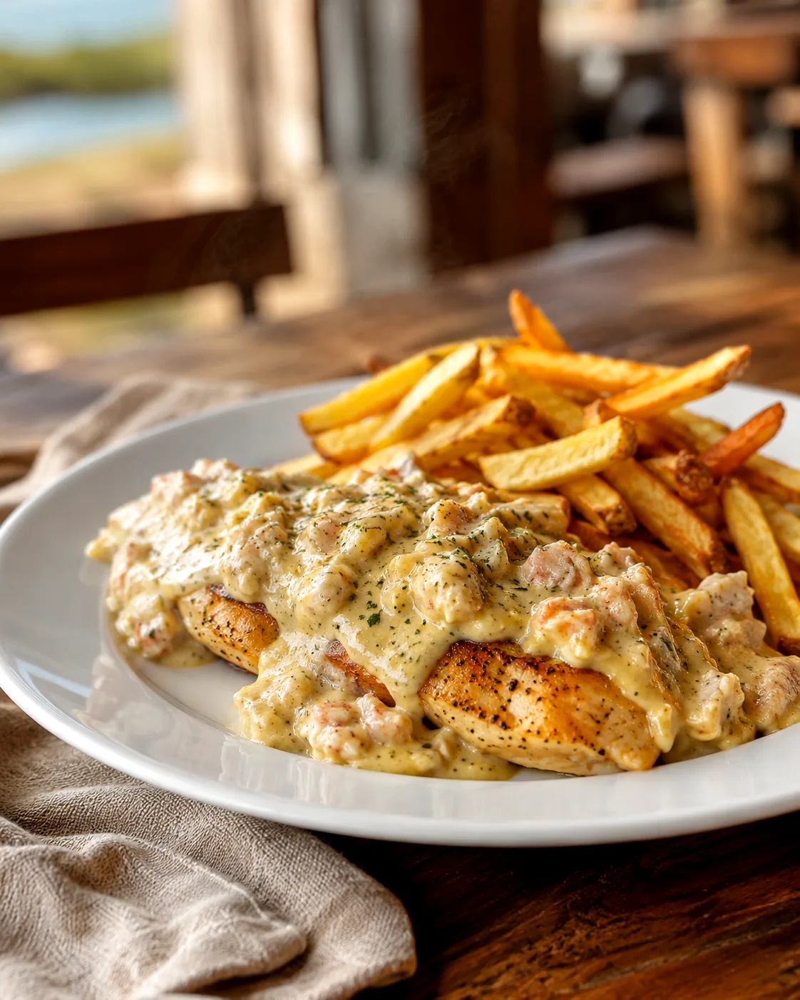
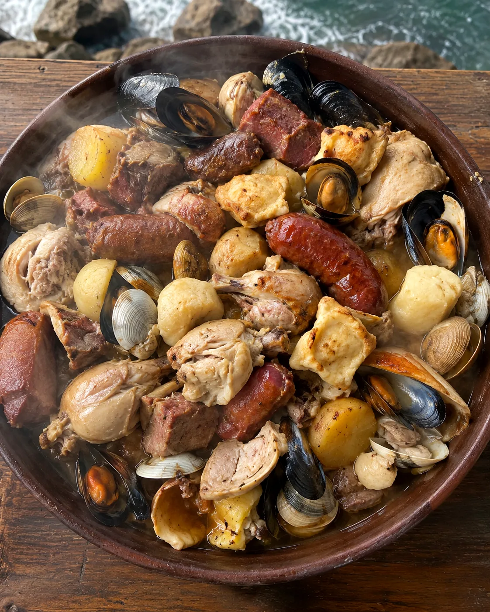
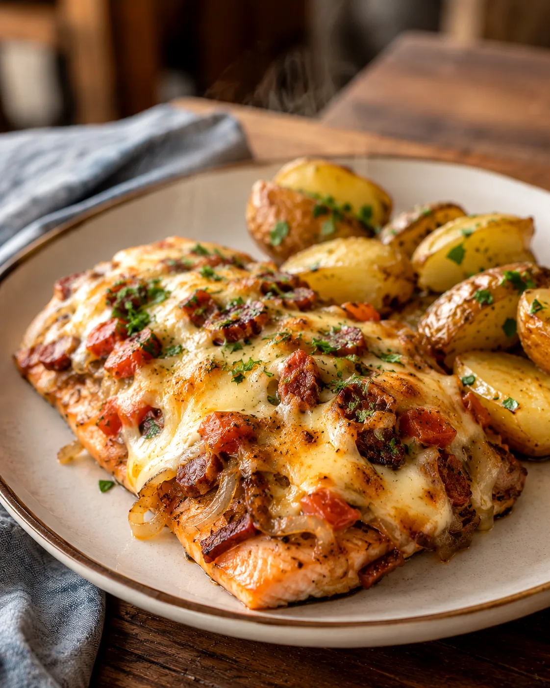
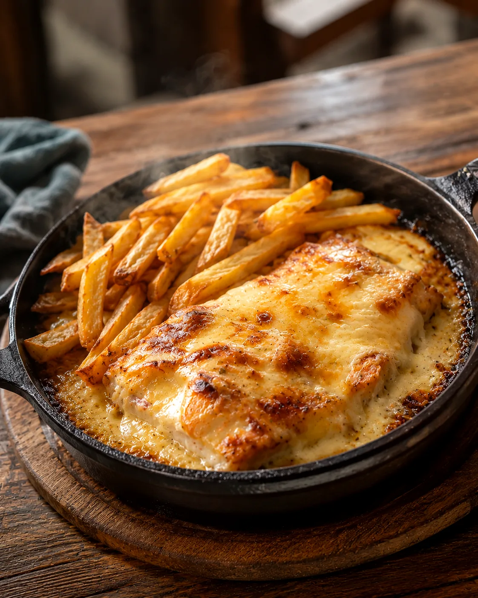
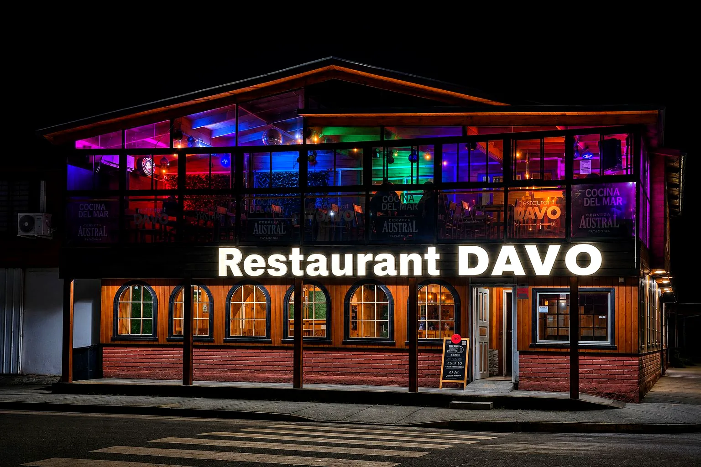
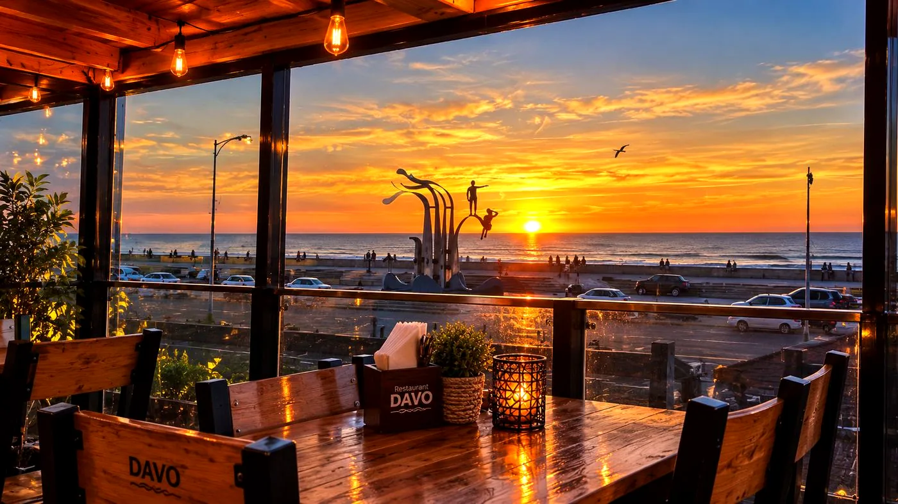
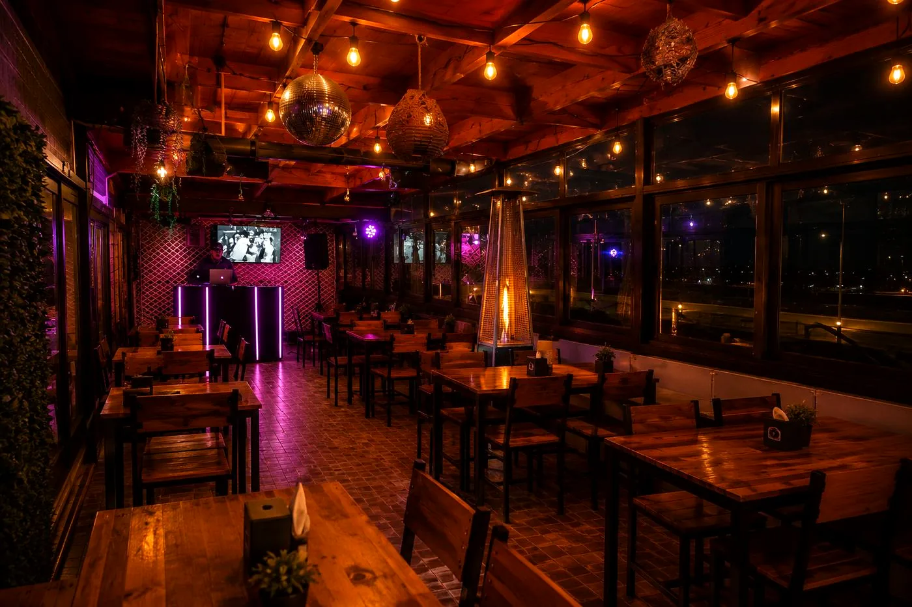

Pollo JaibónPollo Jaibón
$15.000.-Suprema de pollo a la plancha bañada en salsa cremosa de jaiba.
Sabores del mar preparados con tradición, dedicación y pasión.
Cuatro recetas que resumen nuestra cocina: fuego lento, productos del golfo de Arauco y el cariño de una receta familiar.

Pollo JaibónSuprema de pollo a la plancha bañada en salsa cremosa de jaiba.

CurantoEspecial domingo. Equilibrio perfecto entre carnes y mariscos de nuestro golfo.

Salmón CancatoDoble cocción, envuelto al horno con longaniza, queso y vino blanco.

Reineta ReinaDoble cocción: a la plancha y gratinada al horno en paila de fierro, a elección.
Nuestra familia y equipo de trabajo preparan cada plato con dedicación, cuidado y amor. Los productos que utilizamos en su mayoría provienen del mar, dependiendo del clima, la estación del año y la disponibilidad de nuestras caletas y ferias locales.
Conoce nuestra historiaCoctelería de autor, cervezas, vinos y una selecta carta de bar para compartir en un ambiente cálido y envolvente, desde las 17 horas.
Ver terraza y bar
Restaurant Davo de noche
Atardecer en la costanera
Noches en la terrazaCoordinamos tu celebración con nuestras tablas y menús especiales de reserva. Cupos limitados, coordinación previa.
Solicitar mi evento"Cocina a fuego lento que se nota en cada bocado. El Salmón Cancato es una experiencia completa."
— M. Fuentes, Concepción"La terraza al atardecer es imperdible. Volvemos cada vez que pasamos por Laraquete."
— R. Contreras, Arauco"El Curanto de los domingos vale cada minuto de viaje. Trato familiar y cercano."
— P. Vidal, CoronelReseñas representativas de nuestros comensales — cuéntanos tu experiencia en Instagram @_restaurant_davo.
Nos ubicamos en Ruta 160, Laraquete, Región del Biobío, Chile, a 50 km al sur de Concepción, junto a la extensa costanera de Laraquete.
Ver ubicaciónEscríbenos por WhatsApp y confirmamos tu reserva al instante.